Getting Connected
In this activity, you will learn how to connect to your workshop environment and get familiar with the JupyterLab user interface.
Click Getting Connected to get started.
1. Login to OpenShift AI
Pre-requisites: You have logged on to OpenShift.
After logging on to OpenShift you will open the OpenShift AI platform from the Applications menu.
-
Click the Applications menu button in the OpenShift toolbar.
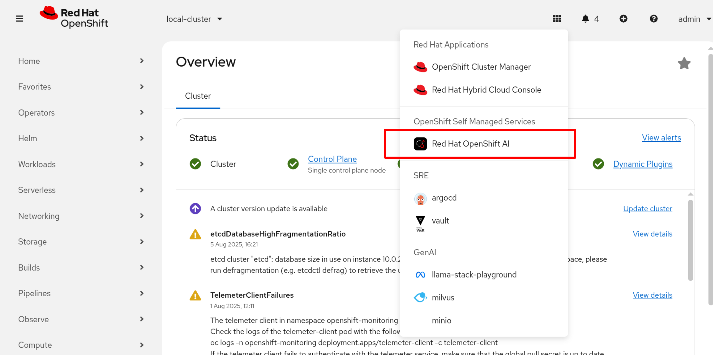
-
Click Red Hat OpenShift AI.
In this workshop we have not enabled single sign-on so OpenShift AI will prompt you to log in.
-
Log in using the credentials for the workshop:
Username: (You will be provided with the username on the day.)
Password: (You will be provided with the password on the day.)
-
Click Login
OpenShift AI displays the main console.
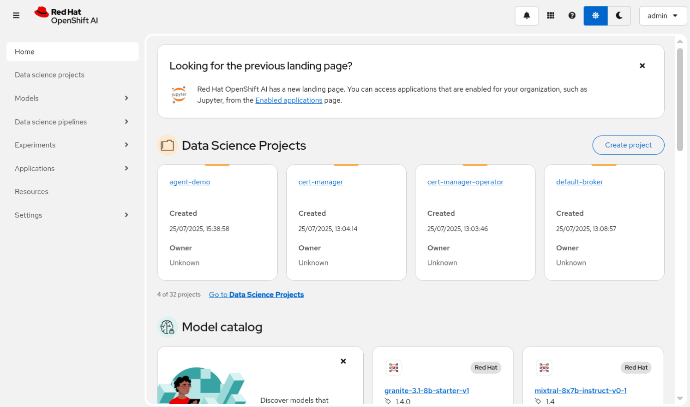
2. Import a workbench image
-
We need to import a workbench image that supports voice libraries. Click on Settings > Environment Setup > Workbench Images - Import new image*
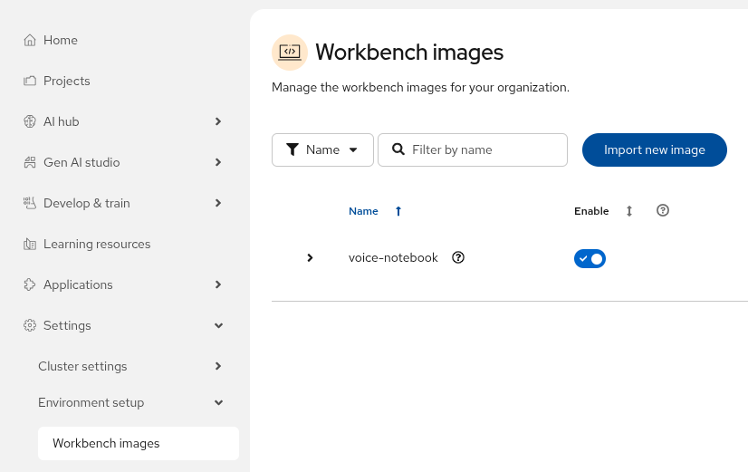
-
Fill in the image details:
Image Location: quay.io/eformat/voice-notebook:latest
Name: voice-notebook
Hardware profile: nvidia.com/gpu
+
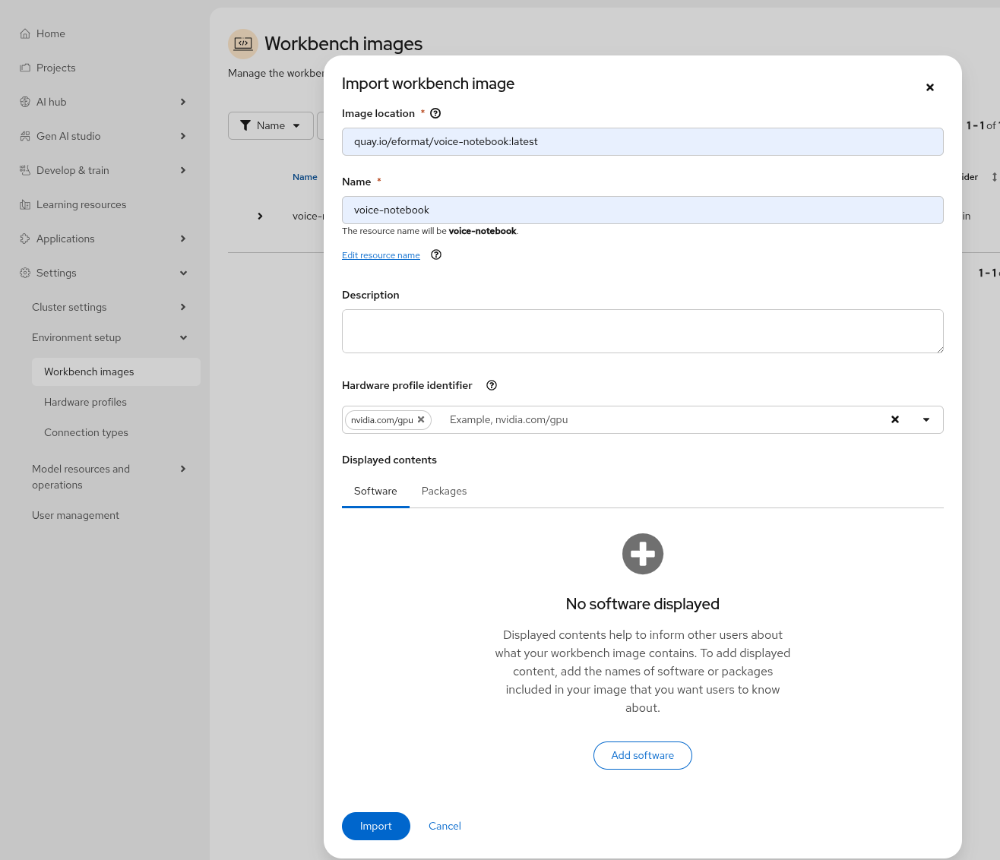
-
Select Import
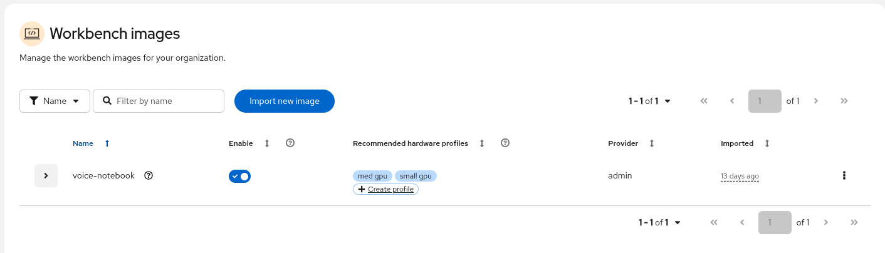
3. Create a project
-
Click the Create project button on the top right of the display.
-
Type
ai-roadshowin the Name text box.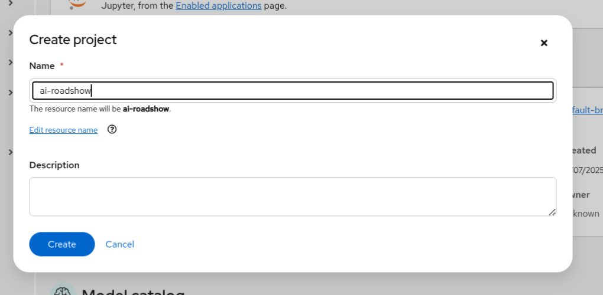
-
Click Create
OpenShift AI creates an empty project.
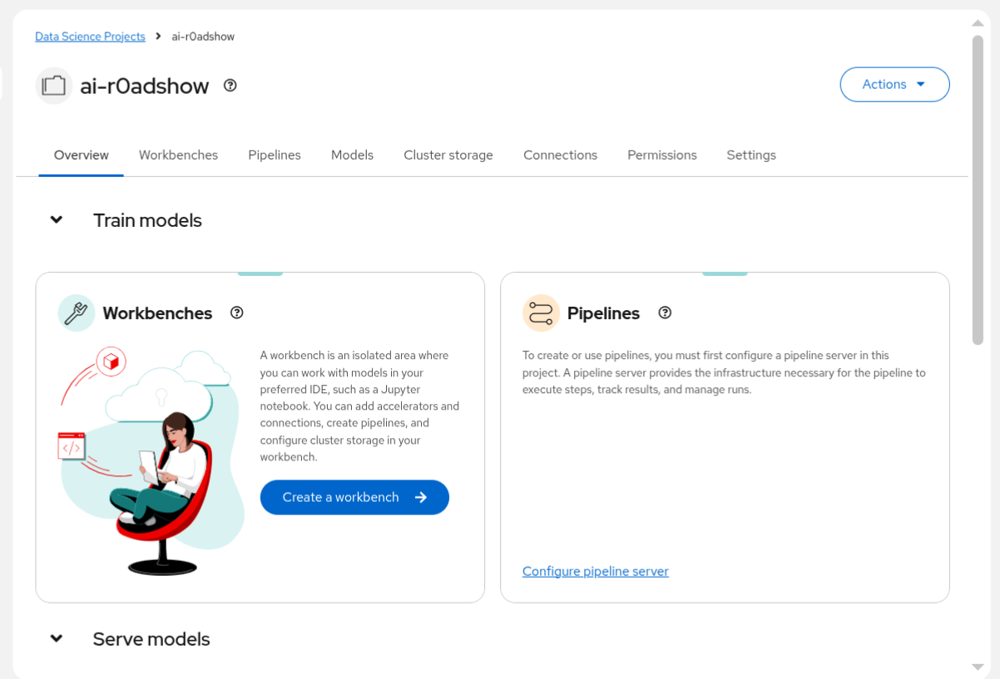
4. Create a workbench
-
Click Create a workbench in the Workbenches group box. OpenShift AI prompts you to complete the Workbench details.
-
Enter the following details into the Create workbench form:
Name: getting-connected
Image Selection: voice-notebook
Hardware profile: Small
Leave all other settings as defaults.
+
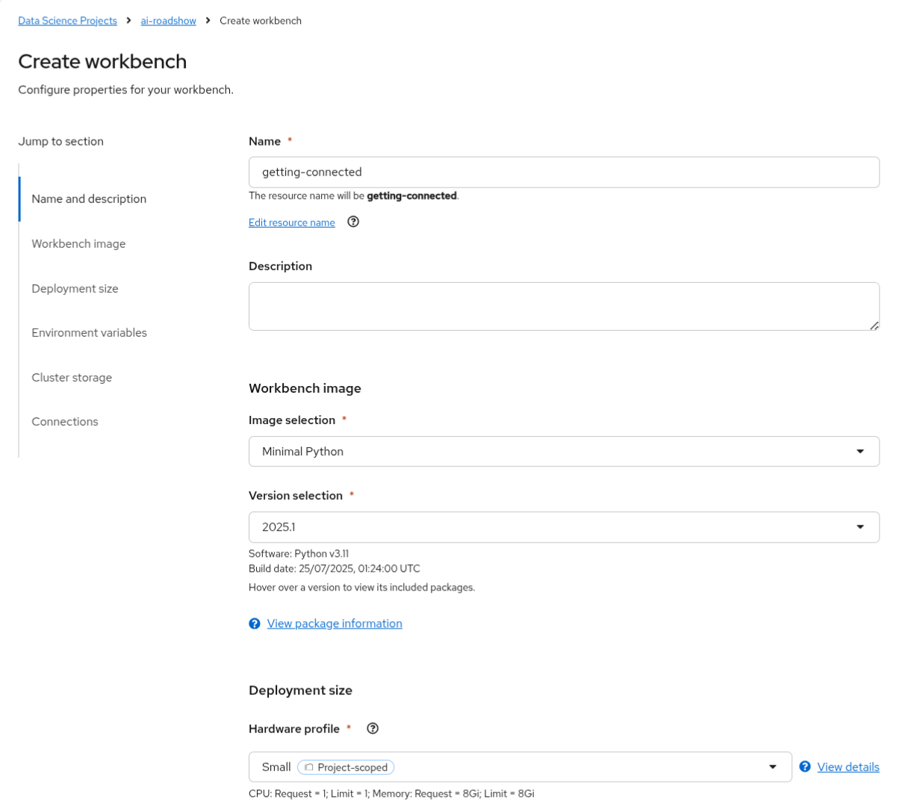
Review the information you have entered
-
Click Create workbench
OpenShift AI creates and starts the workbench.
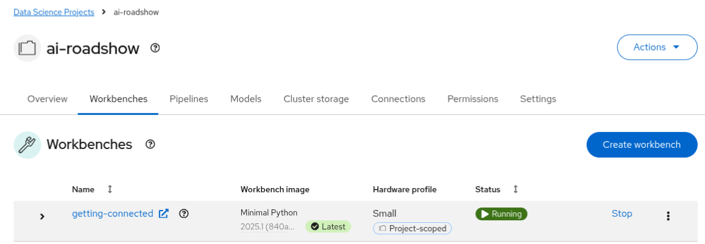
Wait for the status to change to Running.
The workbench has now been created. You will now open the workbench, which will launch JupyterLab, your IDE for the lab.
5. Open the Jupyter notebook
-
Click getting-connected to open JupyterLab.
In the login dialog box, enter the same credentials you used to log into OpenShift at the start of this lab.
-
Click Login
OpenShift AI launches JupyterLab.
With JupyterLab now running, you will now download all of the lab materials:
-
Click the Git button in the toolbar on the left side of JupyterLab.
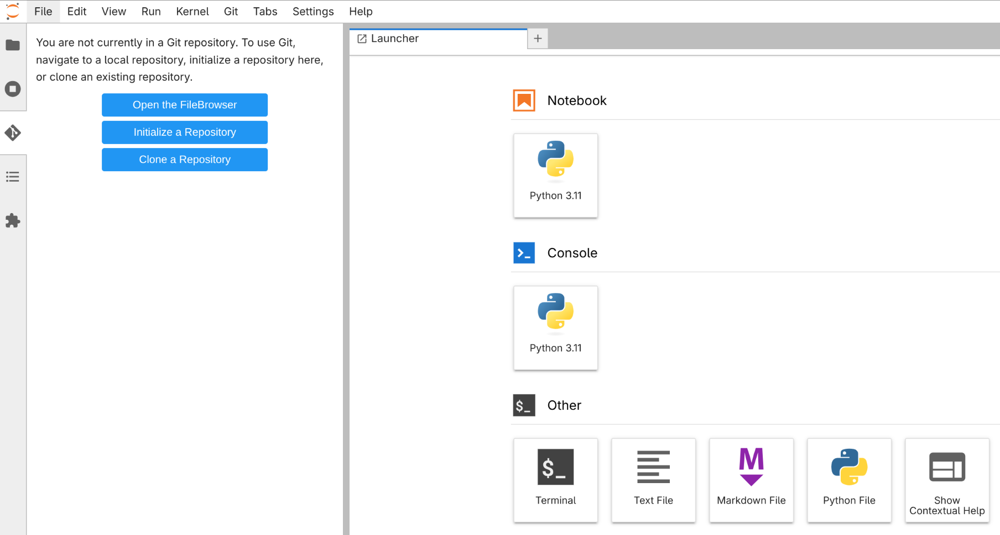
-
Click Clone a Repository
OpenShift AI prompts you to enter the repository URL and other options.
-
Copy and paste the following into the URI of the remote Git repository text box:
https://github.com/eformat/voice-agents.git -
Click Include submodules.
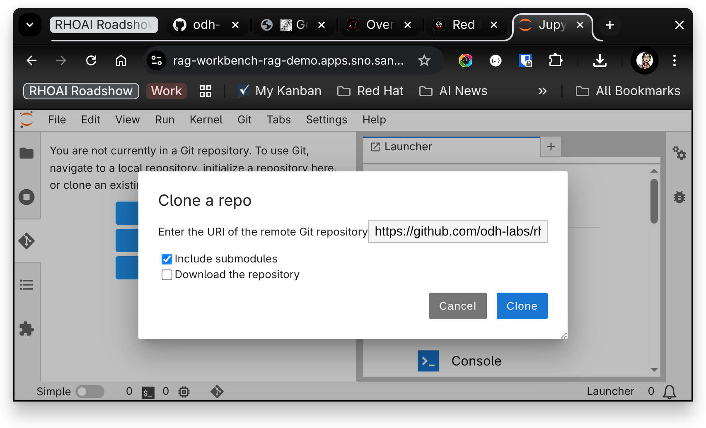
-
Click Clone.
JupyterLab copies the source code from GitHub into your Workspace.
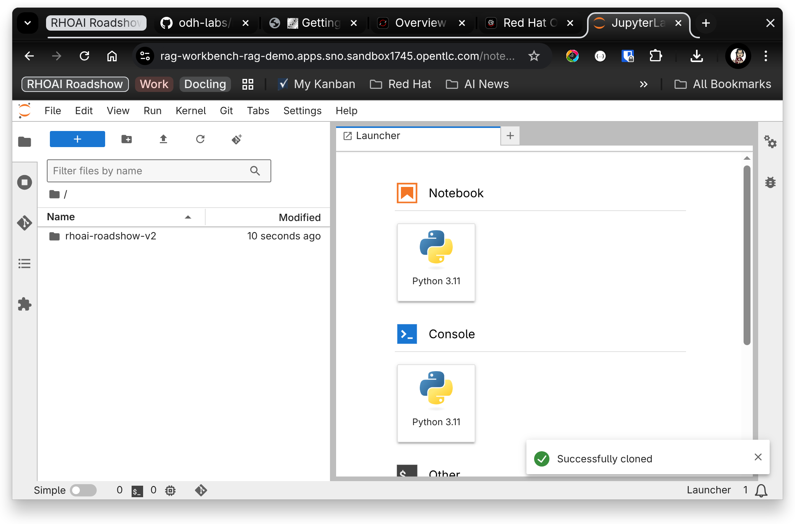
-
In the File Explorer panel, navigate into the directory:
/voice-agents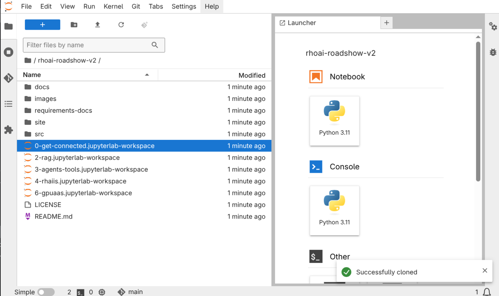
-
Double click 0-get-connected.jupyterlab-workspace to open the workspace for this activity. JupyterLab opens the workspace. All of the notebooks you will use are visible in the File Explorer.
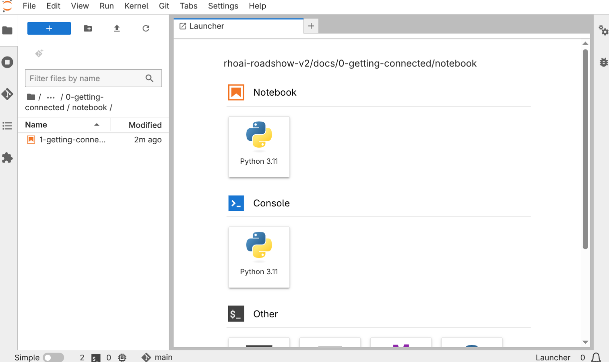
When done, you have successfully connected to your environment.
6. Get familiar with JupyterLab
6.1. Running code in a notebook
|
If you’re already at ease with Jupyter Notebooks, you can skip to the next section. |
A notebook is an environment where you have cells that can display formatted text or code.
This is an empty cell:
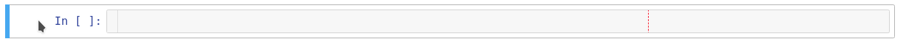
This is a cell with some code:
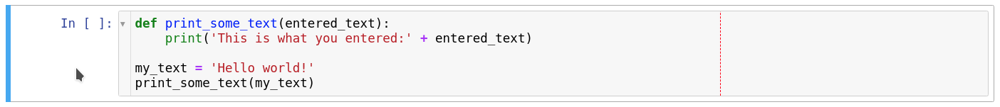
Code cells contain Python code that you can run interactively. You can modify the code and then run it. The code does not run on your computer or in the browser, but directly in the environment that you are connected to.
You can run a code cell from either the notebook interface or from the keyboard:
-
From the JupyterLab console, select the top-most cell (by clicking inside the cell or to the left side of the cell) and then click Run from the toolbar.
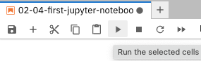
-
From the keyboard: Press CTRL**ENTER** to run a cell or press **SHIFT**ENTER to run the cell and automatically select the next one.
After you run a cell, you can see the result of its code as well as information about when the cell was run, as shown in this example:
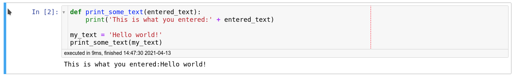
When you save a notebook, the code and the results are saved. You can reopen the notebook to look at the results without having to run the program again, while still having access to the code.
6.2. Notebooks blend code with documentation
Notebooks are so named because they are like a physical notebook: you can take notes about your experiments (which you will do), along with the code itself, including any parameters that you set. You can see the output of the experiment inline (this is the result from a cell after it’s run), along with all the notes that you want to take (to do that, from the menu switch the cell type from Code to Markdown).
7. Try It
Now that you know the basics, give it a try!
7.1. Procedure
In your workbench:
-
In the File Explorer open the notebook called: 0-first-jupyter-notebook.ipynb
-
Experiment by, for example, running the existing cells, adding more cells and creating functions.
You can do what you want - it’s your environment and there is no risk of breaking anything or impacting other users. This environment isolation is also a great advantage brought by OpenShift AI.
-
Optionally, create a new notebook in which the code cells are run by using a Python 3 kernel:
-
Create a new notebook by either selecting File > New > Notebook or by clicking the Python 3 tile in the Notebook section of the launcher window:
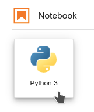
You can use different kernels, with different languages or versions, to run in your notebook.
8. Additional resource
-
If you want to learn more about notebooks, go to https://jupyter.org.
9. End of activity
Congratulations and this completes this activity.